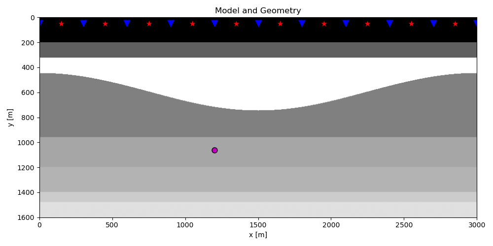
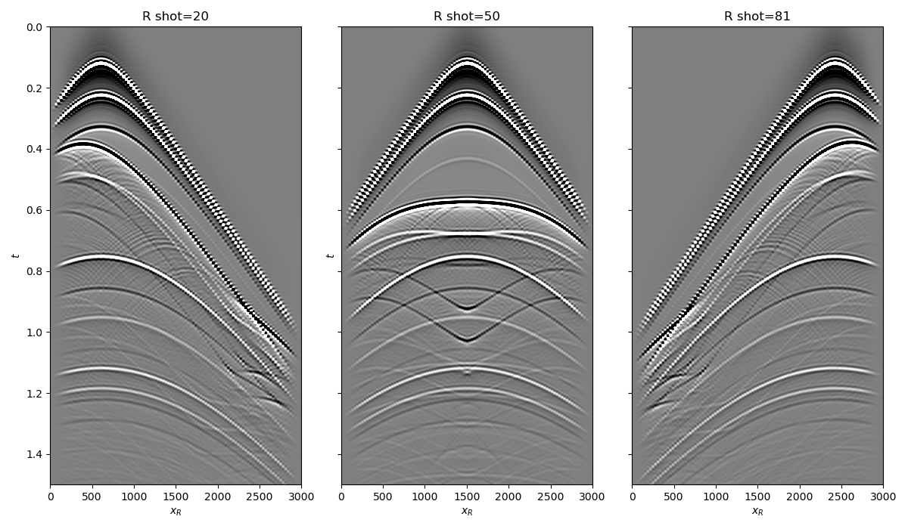
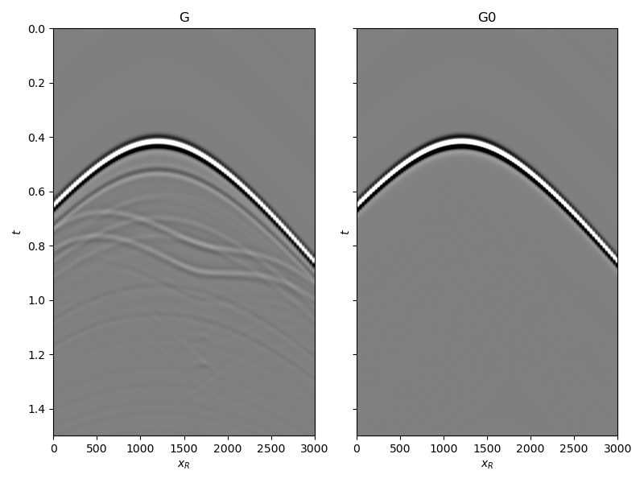
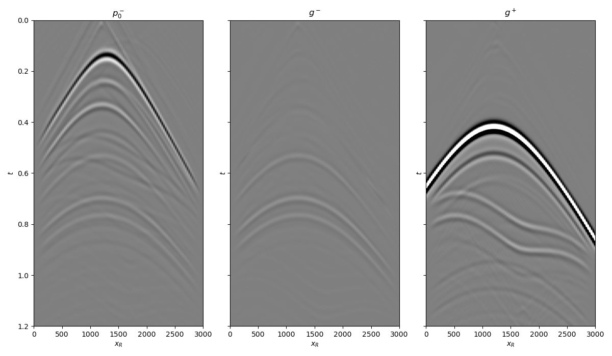
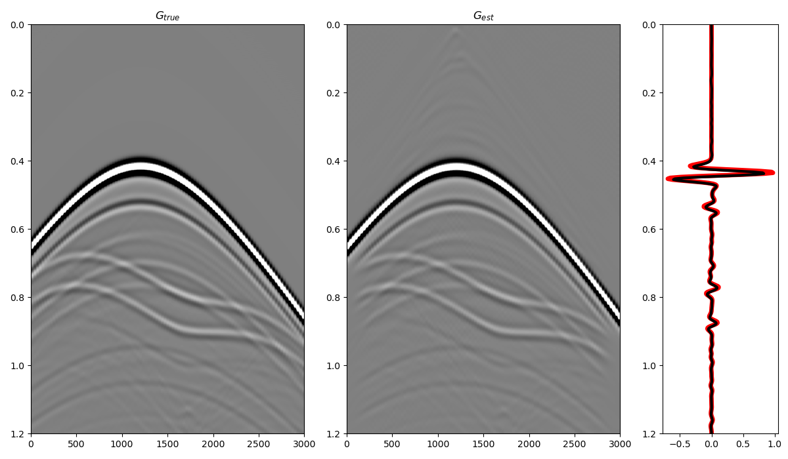
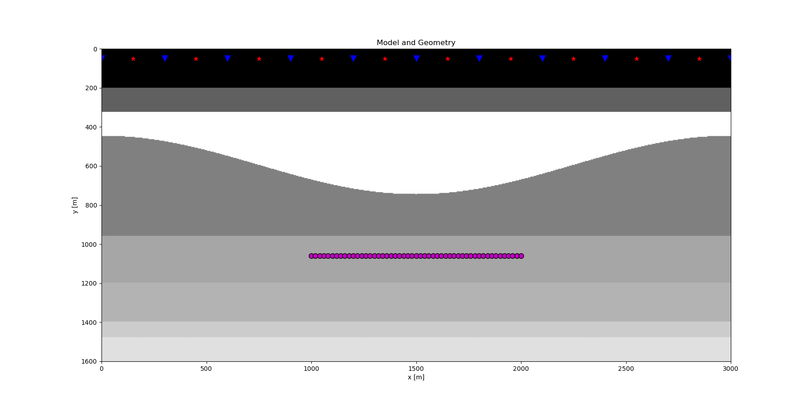
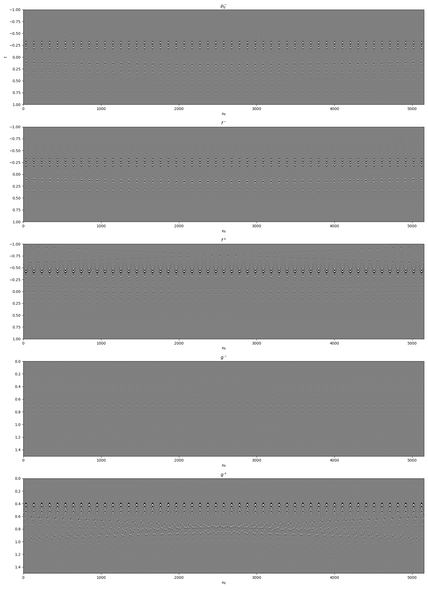
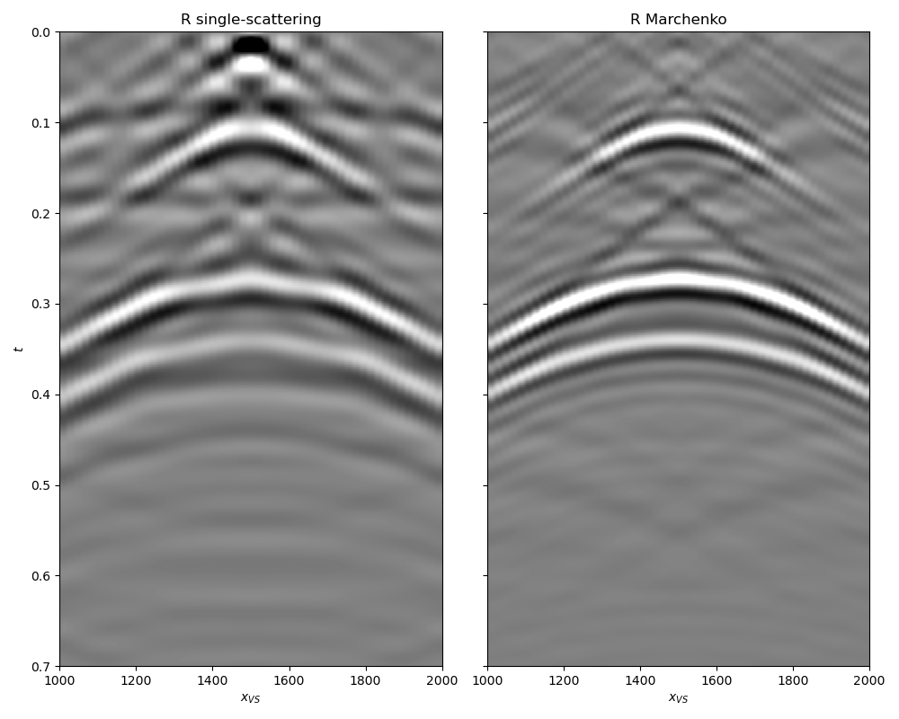

Note
Click here to download the full example code
2. Marchenko redatuming by inversion¶
This example is an extended version of the original tutorial from the PyLops
documentation and shows how to set-up and run the
pymarchenko.marchenko.Marchenko inversion using synthetic data
for both single and multiple virtual points.
# sphinx_gallery_thumbnail_number = 5
# pylint: disable=C0103
import warnings
import time
import numpy as np
import matplotlib.pyplot as plt
from scipy.signal import convolve
from pylops.waveeqprocessing import MDD
from pylops.waveeqprocessing.marchenko import directwave
from pylops.utils.tapers import taper3d
from pymarchenko.marchenko import Marchenko
warnings.filterwarnings('ignore')
plt.close('all')
Let’s start by defining some input parameters and loading the geometry
# Input parameters
inputfile = '../testdata/marchenko/input.npz'
vel = 2400.0 # velocity
toff = 0.045 # direct arrival time shift
nsmooth = 10 # time window smoothing
nfmax = 500 # max frequency for MDC (#samples)
nstaper = 11 # source/receiver taper lenght
niter = 10 # iterations
inputdata = np.load(inputfile)
# Receivers
r = inputdata['r']
nr = r.shape[1]
dr = r[0, 1]-r[0, 0]
# Sources
s = inputdata['s']
ns = s.shape[1]
ds = s[0, 1]-s[0, 0]
# Virtual points
vs = inputdata['vs']
# Density model
rho = inputdata['rho']
z, x = inputdata['z'], inputdata['x']
plt.figure(figsize=(10, 5))
plt.imshow(rho, cmap='gray', extent=(x[0], x[-1], z[-1], z[0]))
plt.scatter(s[0, 5::10], s[1, 5::10], marker='*', s=150, c='r', edgecolors='k')
plt.scatter(r[0, ::10], r[1, ::10], marker='v', s=150, c='b', edgecolors='k')
plt.scatter(vs[0], vs[1], marker='.', s=250, c='m', edgecolors='k')
plt.axis('tight')
plt.xlabel('x [m]')
plt.ylabel('y [m]')
plt.title('Model and Geometry')
plt.xlim(x[0], x[-1])
plt.tight_layout()

Let’s now load and display the reflection response
# Time axis
t = inputdata['t'][:-100]
ot, dt, nt = t[0], t[1]-t[0], len(t)
# Reflection data (R[s, r, t]) and subsurface fields
R = inputdata['R'][:, :, :-100]
R = np.swapaxes(R, 0, 1) # just because of how the data was saved
taper = taper3d(nt, [ns, nr], [nstaper, nstaper], tapertype='hanning')
R = R * taper
fig, axs = plt.subplots(1, 3, sharey=True, figsize=(12, 7))
axs[0].imshow(R[20].T, cmap='gray', vmin=-1e-2, vmax=1e-2,
extent=(r[0, 0], r[0, -1], t[-1], t[0]))
axs[0].set_title('R shot=20')
axs[0].set_xlabel(r'$x_R$')
axs[0].set_ylabel(r'$t$')
axs[0].axis('tight')
axs[0].set_ylim(1.5, 0)
axs[1].imshow(R[ns//2].T, cmap='gray', vmin=-1e-2, vmax=1e-2,
extent=(r[0, 0], r[0, -1], t[-1], t[0]))
axs[1].set_title('R shot=%d' %(ns//2))
axs[1].set_xlabel(r'$x_R$')
axs[1].set_ylabel(r'$t$')
axs[1].axis('tight')
axs[1].set_ylim(1.5, 0)
axs[2].imshow(R[ns-20].T, cmap='gray', vmin=-1e-2, vmax=1e-2,
extent=(r[0, 0], r[0, -1], t[-1], t[0]))
axs[2].set_title('R shot=%d' %(ns-20))
axs[2].set_xlabel(r'$x_R$')
axs[2].axis('tight')
axs[2].set_ylim(1.5, 0)
fig.tight_layout()

and the true and background subsurface fields
# Subsurface fields
Gsub = inputdata['Gsub'][:-100]
G0sub = inputdata['G0sub'][:-100]
wav = inputdata['wav']
wav_c = np.argmax(wav)
Gsub = np.apply_along_axis(convolve, 0, Gsub, wav, mode='full')
Gsub = Gsub[wav_c:][:nt]
G0sub = np.apply_along_axis(convolve, 0, G0sub, wav, mode='full')
G0sub = G0sub[wav_c:][:nt]
fig, axs = plt.subplots(1, 2, sharey=True, figsize=(8, 6))
axs[0].imshow(Gsub, cmap='gray', vmin=-1e6, vmax=1e6,
extent=(r[0, 0], r[0, -1], t[-1], t[0]))
axs[0].set_title('G')
axs[0].set_xlabel(r'$x_R$')
axs[0].set_ylabel(r'$t$')
axs[0].axis('tight')
axs[0].set_ylim(1.5, 0)
axs[1].imshow(G0sub, cmap='gray', vmin=-1e6, vmax=1e6,
extent=(r[0, 0], r[0, -1], t[-1], t[0]))
axs[1].set_title('G0')
axs[1].set_xlabel(r'$x_R$')
axs[1].set_ylabel(r'$t$')
axs[1].axis('tight')
axs[1].set_ylim(1.5, 0)
fig.tight_layout()

Let’s now create an object of the
pymarchenko.marchenko.Marchenko class and apply redatuming
for a single subsurface point vs.
# Direct arrival traveltime
trav = np.sqrt((vs[0]-r[0])**2+(vs[1]-r[1])**2)/vel
MarchenkoWM = Marchenko(R, dt=dt, dr=dr, nfmax=nfmax, wav=wav,
toff=toff, nsmooth=nsmooth)
t0 = time.time()
f1_inv_minus, f1_inv_plus, p0_minus, g_inv_minus, g_inv_plus = \
MarchenkoWM.apply_onepoint(trav, G0=G0sub.T, rtm=True, greens=True,
dottest=True, **dict(iter_lim=niter, show=True))
g_inv_tot = g_inv_minus + g_inv_plus
tone = time.time() - t0
print('Elapsed time (s): %.2f' % tone)
Out:
Dot test passed, v^T(Opu)=-1070.477735 - u^T(Op^Tv)=-1070.477735
Dot test passed, v^T(Opu)=-37.358998 - u^T(Op^Tv)=-37.358998
LSQR Least-squares solution of Ax = b
The matrix A has 282598 rows and 282598 columns
damp = 0.00000000000000e+00 calc_var = 0
atol = 1.00e-08 conlim = 1.00e+08
btol = 1.00e-08 iter_lim = 10
Itn x[0] r1norm r2norm Compatible LS Norm A Cond A
0 0.00000e+00 2.983e+07 2.983e+07 1.0e+00 3.5e-08
1 0.00000e+00 1.311e+07 1.311e+07 4.4e-01 9.2e-01 1.1e+00 1.0e+00
2 0.00000e+00 7.406e+06 7.406e+06 2.5e-01 3.9e-01 1.8e+00 2.2e+00
3 0.00000e+00 5.479e+06 5.479e+06 1.8e-01 3.3e-01 2.1e+00 3.4e+00
4 0.00000e+00 3.659e+06 3.659e+06 1.2e-01 3.3e-01 2.5e+00 5.2e+00
5 0.00000e+00 2.780e+06 2.780e+06 9.3e-02 2.6e-01 2.9e+00 6.8e+00
6 0.00000e+00 2.244e+06 2.244e+06 7.5e-02 2.3e-01 3.2e+00 8.5e+00
7 0.00000e+00 1.498e+06 1.498e+06 5.0e-02 2.5e-01 3.6e+00 1.1e+01
8 0.00000e+00 1.105e+06 1.105e+06 3.7e-02 1.9e-01 3.9e+00 1.3e+01
9 0.00000e+00 8.988e+05 8.988e+05 3.0e-02 1.6e-01 4.2e+00 1.4e+01
10 0.00000e+00 6.714e+05 6.714e+05 2.3e-02 1.7e-01 4.4e+00 1.6e+01
LSQR finished
The iteration limit has been reached
istop = 7 r1norm = 6.7e+05 anorm = 4.4e+00 arnorm = 5.1e+05
itn = 10 r2norm = 6.7e+05 acond = 1.6e+01 xnorm = 3.5e+07
Elapsed time (s): 2.75
We can now compare the result of Marchenko redatuming via LSQR with standard redatuming
fig, axs = plt.subplots(1, 3, sharey=True, figsize=(12, 7))
axs[0].imshow(p0_minus.T, cmap='gray', vmin=-5e5, vmax=5e5,
extent=(r[0, 0], r[0, -1], t[-1], -t[-1]))
axs[0].set_title(r'$p_0^-$')
axs[0].set_xlabel(r'$x_R$')
axs[0].set_ylabel(r'$t$')
axs[0].axis('tight')
axs[0].set_ylim(1.2, 0)
axs[1].imshow(g_inv_minus.T, cmap='gray', vmin=-5e5, vmax=5e5,
extent=(r[0, 0], r[0, -1], t[-1], -t[-1]))
axs[1].set_title(r'$g^-$')
axs[1].set_xlabel(r'$x_R$')
axs[1].set_ylabel(r'$t$')
axs[1].axis('tight')
axs[1].set_ylim(1.2, 0)
axs[2].imshow(g_inv_plus.T, cmap='gray', vmin=-5e5, vmax=5e5,
extent=(r[0, 0], r[0, -1], t[-1], -t[-1]))
axs[2].set_title(r'$g^+$')
axs[2].set_xlabel(r'$x_R$')
axs[2].set_ylabel(r'$t$')
axs[2].axis('tight')
axs[2].set_ylim(1.2, 0)
fig.tight_layout()

and compare the total Green’s function with the directly modelled one
fig = plt.figure(figsize=(12, 7))
ax1 = plt.subplot2grid((1, 5), (0, 0), colspan=2)
ax2 = plt.subplot2grid((1, 5), (0, 2), colspan=2)
ax3 = plt.subplot2grid((1, 5), (0, 4))
ax1.imshow(Gsub, cmap='gray', vmin=-5e5, vmax=5e5,
extent=(r[0, 0], r[0, -1], t[-1], t[0]))
ax1.set_title(r'$G_{true}$')
axs[0].set_xlabel(r'$x_R$')
axs[0].set_ylabel(r'$t$')
ax1.axis('tight')
ax1.set_ylim(1.2, 0)
ax2.imshow(g_inv_tot.T, cmap='gray', vmin=-5e5, vmax=5e5,
extent=(r[0, 0], r[0, -1], t[-1], -t[-1]))
ax2.set_title(r'$G_{est}$')
axs[1].set_xlabel(r'$x_R$')
axs[1].set_ylabel(r'$t$')
ax2.axis('tight')
ax2.set_ylim(1.2, 0)
ax3.plot(Gsub[:, nr//2]/Gsub.max(), t, 'r', lw=5)
ax3.plot(g_inv_tot[nr//2, nt-1:]/g_inv_tot.max(), t, 'k', lw=3)
ax3.set_ylim(1.2, 0)
fig.tight_layout()

Finally, we show that when interested in creating subsurface wavefields
for a group of subsurface points the
pymarchenko.marchenko..Marchenko.apply_multiplepoints should be
used instead of
pymarchenko.marchenko..Marchenko.apply_onepoint.
nvs = 51
dvsx = 20
vs = [np.arange(nvs)*dvsx + 1000, np.ones(nvs)*1060]
plt.figure(figsize=(18, 9))
plt.imshow(rho, cmap='gray', extent = (x[0], x[-1], z[-1], z[0]))
plt.scatter(s[0, 5::10], s[1, 5::10], marker='*', s=150, c='r', edgecolors='k')
plt.scatter(r[0, ::10], r[1, ::10], marker='v', s=150, c='b', edgecolors='k')
plt.scatter(vs[0], vs[1], marker='.', s=250, c='m', edgecolors='k')
plt.axis('tight')
plt.xlabel('x [m]'),plt.ylabel('y [m]'),plt.title('Model and Geometry')
plt.xlim(x[0], x[-1])

Out:
(0.0, 3000.0)
We now compute the direct arrival traveltime table and run inversion
# Direct arrival traveltime
trav = np.sqrt((vs[0]-r[0][:, np.newaxis])**2 +
(vs[1]-r[1][:, np.newaxis])**2)/vel
# Inversion
MarchenkoWM = Marchenko(R, dt=dt, dr=dr, nfmax=nfmax, wav=wav,
toff=toff, nsmooth=nsmooth)
t0 = time.time()
f1_inv_minus, f1_inv_plus, p0_minus, g_inv_minus, g_inv_plus = \
MarchenkoWM.apply_multiplepoints(trav, nfft=2**11, rtm=True,
greens=True, dottest=False,
**dict(iter_lim=niter, show=True))
g_inv_tot = g_inv_minus + g_inv_plus
tmulti = time.time() - t0
print('Elapsed time (s): %.2f' % tmulti)
fig, axs = plt.subplots(5, 1, figsize=(16, 22))
axs[0].imshow(np.swapaxes(p0_minus, 0, 1).reshape(nr*nvs, 2*nt-1).T, cmap='gray',
vmin=-5e-1, vmax=5e-1, extent=(0, nr*nvs, t[-1], -t[-1]))
axs[0].set_title(r'$p_0^-$')
axs[0].set_xlabel(r'$x_R$')
axs[0].set_ylabel(r'$t$')
axs[0].axis('tight')
axs[0].set_ylim(1, -1)
axs[1].imshow(np.swapaxes(f1_inv_minus, 0, 1).reshape(nr*nvs,2*nt-1).T,
cmap='gray', vmin=-5e-1, vmax=5e-1,
extent=(0, nr*nvs, t[-1], -t[-1]))
axs[1].set_title(r'$f^-$')
axs[1].set_xlabel(r'$x_R$')
axs[1].axis('tight')
axs[1].set_ylim(1, -1)
axs[2].imshow(np.swapaxes(f1_inv_plus, 0, 1).reshape(nr*nvs,2*nt-1).T,
cmap='gray', vmin=-5e-1, vmax=5e-1,
extent=(0, nr*nvs, t[-1], -t[-1]))
axs[2].set_title(r'$f^+$')
axs[2].set_xlabel(r'$x_R$')
axs[2].axis('tight')
axs[2].set_ylim(1, -1)
axs[3].imshow(np.swapaxes(g_inv_minus, 0, 1).reshape(nr*nvs,2*nt-1).T,
cmap='gray', vmin=-5e-1, vmax=5e-1,
extent=(0, nr*nvs, t[-1], -t[-1]))
axs[3].set_title(r'$g^-$')
axs[3].set_xlabel(r'$x_R$')
axs[3].axis('tight')
axs[3].set_ylim(1.5, 0)
axs[4].imshow(np.swapaxes(g_inv_plus, 0, 1).reshape(nr*nvs,2*nt-1).T,
cmap='gray', vmin=-5e-1, vmax=5e-1,
extent=(0, nr*nvs, t[-1], -t[-1]))
axs[4].set_title(r'$g^+$')
axs[4].set_xlabel(r'$x_R$')
axs[4].axis('tight')
axs[4].set_ylim(1.5, 0)
fig.tight_layout()

Out:
LSQR Least-squares solution of Ax = b
The matrix A has 14412498 rows and 14412498 columns
damp = 0.00000000000000e+00 calc_var = 0
atol = 1.00e-08 conlim = 1.00e+08
btol = 1.00e-08 iter_lim = 10
Itn x[0] r1norm r2norm Compatible LS Norm A Cond A
0 0.00000e+00 2.816e+02 2.816e+02 1.0e+00 3.7e-03
1 0.00000e+00 1.222e+02 1.222e+02 4.3e-01 9.4e-01 1.1e+00 1.0e+00
2 0.00000e+00 6.887e+01 6.887e+01 2.4e-01 3.9e-01 1.8e+00 2.2e+00
3 0.00000e+00 5.114e+01 5.114e+01 1.8e-01 3.2e-01 2.2e+00 3.4e+00
4 0.00000e+00 3.472e+01 3.472e+01 1.2e-01 3.2e-01 2.5e+00 5.1e+00
5 0.00000e+00 2.679e+01 2.679e+01 9.5e-02 2.6e-01 2.9e+00 6.8e+00
6 0.00000e+00 2.166e+01 2.166e+01 7.7e-02 2.2e-01 3.3e+00 8.5e+00
7 0.00000e+00 1.493e+01 1.493e+01 5.3e-02 2.4e-01 3.6e+00 1.1e+01
8 0.00000e+00 1.119e+01 1.119e+01 4.0e-02 1.9e-01 3.9e+00 1.3e+01
9 0.00000e+00 9.032e+00 9.032e+00 3.2e-02 1.6e-01 4.2e+00 1.4e+01
10 0.00000e+00 6.796e+00 6.796e+00 2.4e-02 1.8e-01 4.4e+00 1.6e+01
LSQR finished
The iteration limit has been reached
istop = 7 r1norm = 6.8e+00 anorm = 4.4e+00 arnorm = 5.2e+00
itn = 10 r2norm = 6.8e+00 acond = 1.6e+01 xnorm = 3.3e+02
Elapsed time (s): 48.18
Let’s evaluate how faster is to actually use
pymarchenko.marchenko..Marchenko.apply_multiplepoints
instead of repeatedly applying
pymarchenko.marchenko..Marchenko.apply_onepoint.
Out:
Speedup between single and multi: 2.91
Finally we can take this example one step further and try to recover the
local reflectivity at the depth level of the virtual sources using
pylops.waveeqprocessing.mdd.MDD.
# Taper gplus
tap = taper3d(2*nt-1, (nr, nvs), (1, 5))
g_inv_plus *= tap
# Direct wave
G0sub = np.zeros((nr, nvs, nt))
for ivs in range(nvs):
G0sub[:, ivs] = directwave(wav, trav[:,ivs], nt, dt,
nfft=int(2**(np.ceil(np.log2(nt))))).T
# MDD
_, Rrtm = MDD(G0sub, p0_minus[:, :, nt-1:],
dt=dt, dr=dvsx, twosided=True, adjoint=True,
psf=False, wav=wav[wav_c-60:wav_c+60],
nfmax=nfmax, dtype='complex64', dottest=False,
**dict(iter_lim=0, show=0))
Rmck = MDD(g_inv_plus[:, :, nt-1:], g_inv_minus[:, :, nt-1:],
dt=dt, dr=dvsx, twosided=True, adjoint=False, psf=False,
nfmax=nfmax, dtype='complex64', dottest=False,
**dict(iter_lim=10, show=0))
fig, axs = plt.subplots(1, 2, sharey=True, figsize=(10, 8))
im = axs[0].imshow(Rrtm[nvs//2, :, nt:].T, cmap='gray',
vmin=-0.4*np.max(np.abs(Rrtm[nvs//2, :, nt:])),
vmax=0.4*np.max(np.abs(Rrtm[nvs//2, :, nt:])),
extent=(vs[0][0], vs[0][-1], t[-1], t[0]))
axs[0].set_title('R single-scattering')
axs[0].set_xlabel(r'$x_{VS}$')
axs[0].set_ylabel(r'$t$')
axs[0].axis('tight')
axs[1].imshow(Rmck[nvs//2, :, nt:].T, cmap='gray',
vmin=-0.7*np.max(np.abs(Rmck[nvs//2, :, nt:])),
vmax=0.7*np.max(np.abs(Rmck[nvs//2, :, nt:])),
extent=(vs[0][0], vs[0][-1], t[-1], t[0]))
axs[1].set_title('R Marchenko')
axs[1].set_xlabel(r'$x_{VS}$')
axs[1].axis('tight')
axs[1].set_ylim(0.7, 0.)
fig.tight_layout()

Total running time of the script: ( 1 minutes 13.387 seconds)